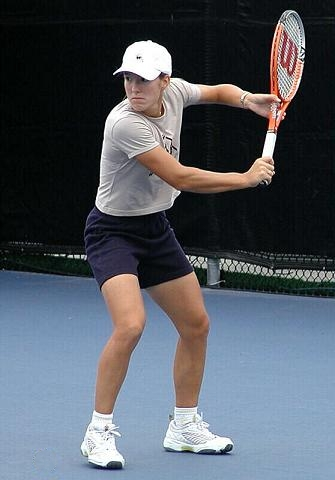
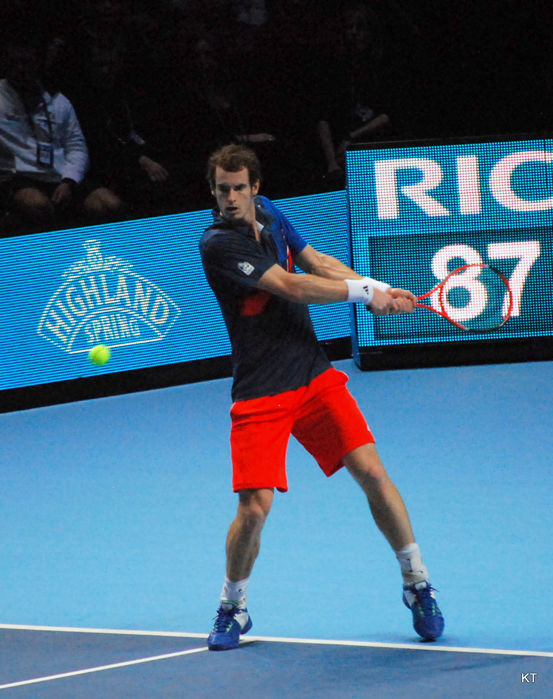
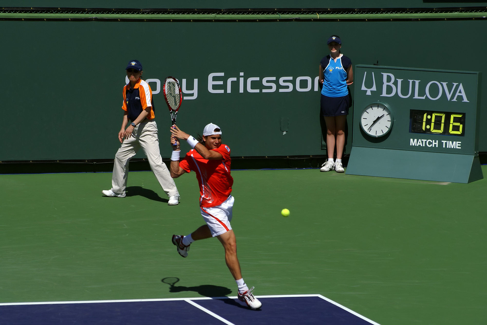
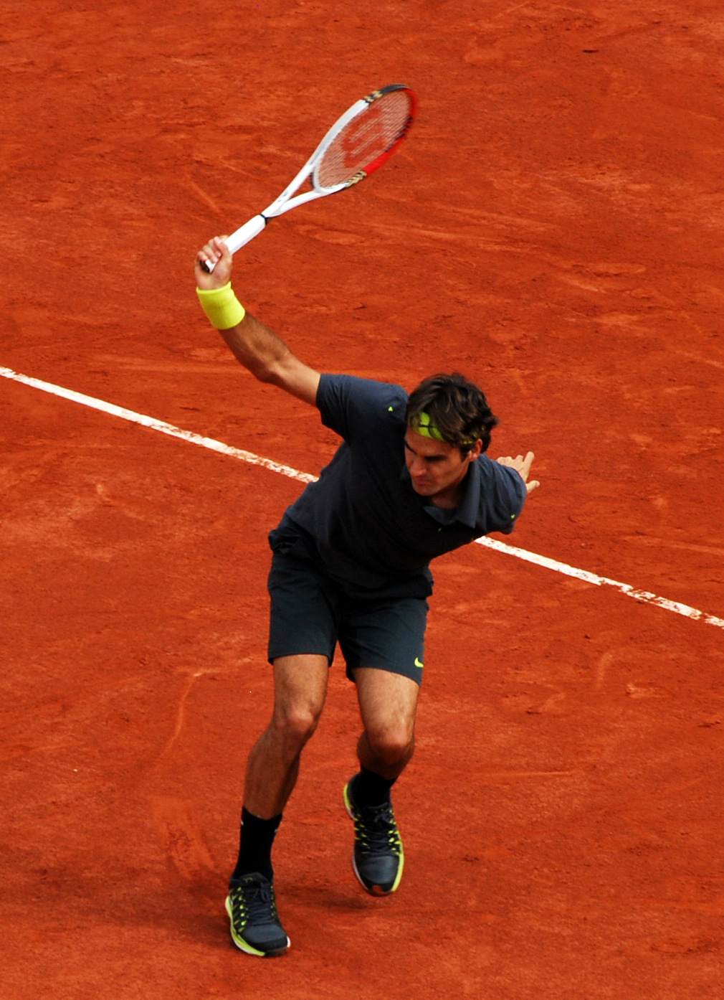

Beidhändiger Griff (Querschnitt)
Rechte Hand (unten) im Continental-Griff · linke Hand (oben) im Eastern-Vorhand-Griff. Linkshänder:innen invertieren die Anordnung.
Sportunterricht · 10. Klasse · Gymnasium NRW
Einführung beidhändige Rückhand · Gymnasium NRW · 5 Trainer:innen · normale Tennisbälle · Lernzirkel mit 5 Stationen
Kernsatz: „Hände wie ein Baseball-Schläger — rechte unten, linke oben. Triff den Ball vor deinem vorderen Fuß. Schwung hoch über die Schulter."

Neun Phasen über 25 Minuten — Bewegungsanteil 21 Min (84 %).
Tastatur: Leertaste Start/Pause · R Reset
Vier Phasen nach Schönborn (2016, S. 144 ff.) und Ferrauti et al. (2016, S. 220 f.). Fotos illustrieren die Zielform — Demonstration positiv, NICHT spiegelverkehrt (Messmer 2023, S. 198).
Parallele Fußstellung in Schulterbreite, Schläger vor dem Körper im neutralen Griff, Knie leicht gebeugt, Blick zur Ballquelle.

Kurze, flache Rückführung des Schlägers auf Schulterhöhe der Nicht-Schlagseite, Oberkörperrotation aus der Hüfte, Gewicht aufs hintere Bein.

Ball wird in Hüfthöhe vor dem vorderen Fuß getroffen, Schlägerfläche senkrecht, beide Arme leicht gebeugt, Gewichtsverlagerung nach vorn.

Schläger schwingt diagonal aufwärts über die gegenüberliegende Schulter aus, Oberkörper bleibt rotiert, Blick folgt dem Ball.
Rechte Hand (unten) im Continental-Griff · linke Hand (oben) im Eastern-Vorhand-Griff. Linkshänder:innen invertieren die Anordnung.
23,77 m × 8,23 m (Einzel) / 10,97 m (Doppel) · Netzhöhe Mitte 0,914 m · an den Pfosten 1,07 m. Quelle: ITF Rules of Tennis 2026.
Lernzirkel · 3:30 Min pro Rotation · 5–6 SuS pro Station · drei Niveaustufen je Aufgabe.
Ihr seid Lernhelfer:innen, nicht Vorturner:innen. Coaching im Timeout-Stil (Messmer, 2023, S. 206).
Hover oder Tap dreht die Karte. Vorderseite: Cue. Rückseite: wann anwenden?
| Station | Trainer:in | Kernaufgabe |
|---|---|---|
| A „Bewegungsspur" | Trainer:in A | Schattenschwung ohne Ball, Treffpunkt-Imagination an Schnur |
| B „Tee-Ball" | Trainer:in B | Schlag am ruhenden Ball gegen Wand |
| C „Sanfter Zuwurf" | Trainer:in C | Wirft aus 3 m, SuS schlägt zur Wand |
| D „Über die Schnur" | Trainer:in D | Wirft, SuS spielt über 1 m-Schnur auf Matte |
| E „Mini-Rallye" | Trainer:in E | Paare hin-und-her über Schnur, Schläge zählen |
Die Stunde stützt sich auf ein integriertes Theorienetz aus motorischer Lernforschung und Sportdidaktik.
Onlinequellen letzter Abruf: 30. Mai 2026.
Aufbauzeit: ca. 12 Min vor Stundenbeginn.
Status wird lokal im Browser gespeichert.
Schul-Sporthalle 27 × 15 m · 5 Stationen · zentraler Sitzkreis · 3-m-Sicherheitszonen.
Station Sitzkreis Rotation A → B → C → D → E
A4-Druckbogen mit 6 SuS-Reflexionskarten.